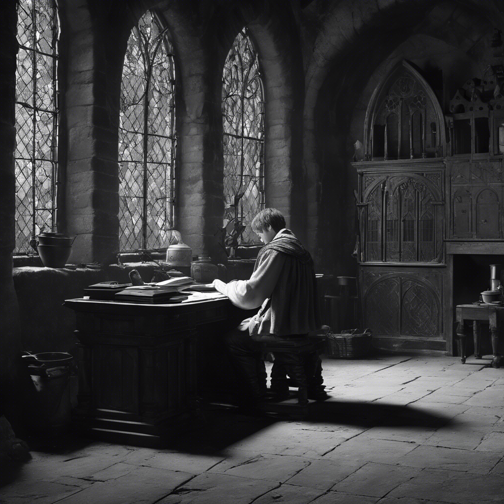

Alex megérti az üzenetet, és bár elvesztette az ereklyét, megtalálta az igazi kincset: az apja emlékét és a békét. Egy emlékművet állít az apja tiszteletére, és folytatja a kalandokat, tudva, hogy az ősi királyság titka soha nem veszett el számára.
